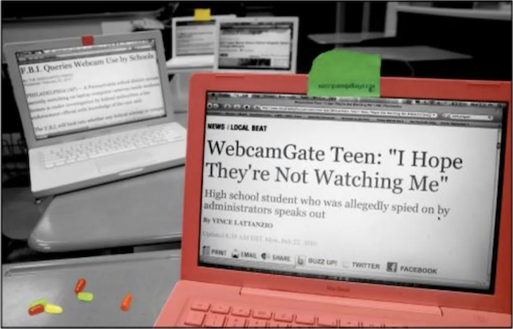

Stickers on Webcams
20 November 2022

Image Credit: Madeline Berger/Staff
Back in 2010 when I was a high school junior in the care of the Lower Merion public School District just outside Philadelphia, Pennsylvania, our school administrators took secret pictures of us in our bedrooms. They instructed network technicians to remotely activate the webcams on our school-issued, tax-funded MacBooks without our knowledge, after school hours, and saved tens of thousands of photos of us to the school’s central hard drives. My fellow student newspaper editors and I called this scandal WebcamGate.
We became aware of WebcamGate after the administrators of Harriton High School attempted to expel a child for drug possession. When the child’s parents asked the administrators to produce evidence, the administrators showed them a picture of alleged pills in the child’s bedroom. The administrators’ justification for activating the webcam to snap secret photos was that the child was supposed to have returned the laptop to school that day, and that when the child failed to comply with the return orders, the laptop was considered stolen property. They argued that their actions were within the scope of the laptop theft recovery policy of our loan contract, even though they intentionally did not go into detail about what the theft recovery procedure entailed.
These are the facts of the case. Director of Technology Virginia DiMedio and Information Systems Coordinator Carol Cafiero made sure all devices were equipped with the spyware TheftTrack after one of 16 Network Technicians, Mike Perbix, said he “really, really” liked its surveillance capabilities. Harriton High School Assistant Vice Principal Lindy Matsko directed Building-Level Technician Kyle O’Brien to initiate TheftTrack on the aforementioned child’s laptop. Mike Perbix took over the surveillance operation, snapping hundreds of photos of the child in the child’s bedroom, and hundreds more of the child’s private communications. Perbix brought what he thought were incriminating photos to his boss, Director of Information Systems George Frazier, who shared the photos with VP Matsko, Assistant Principal Lauren Marcuson, and Principal Steven Kline.
All of these adults—including educators Matsko, Marcuson, and Kline, who worked directly with children—let (and even encouraged) apparent spyware enthusiast Mike Perbix to take secret, nude photos of the children in their care. They also looked at the photos, approved of them, and felt justified in expelling children from school based on them. Apparently the local police agreed, as they had a designated web portal through which to access the photos as well. Amanda Wuest, a District Desktop Technician, expressed an appreciation for TheftTrack as a source of personal entertainment. She emailed Cafiero, “This is awesome. It’s like a little LMSD soap opera.” Cafiero responded, “I know, I love it.”
All of our homework, assignments, and grades were posted online. I, along with many of my peers, did not have consistent access to a personal computer at home, so I needed that laptop in order to complete my schoolwork. Even if we had known about the TheftTrack spyware—which we did not—and even if we had considered that the administration might use TheftTrack to spy on and punish us—which we did not—many of us would still have given them our consent, since to do otherwise would have damaged our ability to succeed in school. In other words, our consent to the laptop’s loan contract was forced consent.
The purpose of this article is not to document how fucked up, grotesque, illegal, or immoral the District’s actions were, because I think that is plain to see. Instead, I want to document the impact of WebcamGate on us, the children. I want other people and especially children who are struggling under the oppression of predatory surveillance in all forms to know they are not alone. I want people in power—states, institutions, administrators, employers, police, and parents alike—to see and understand the real emotional, psychological, and spiritual damage they are doing by wielding surveillance against children and other marginalized groups. In offering my perspective, I hope to illuminate the lived experiences of at least a few children under surveillance: the fear, denial, disgust, and most importantly, the solidarity of resistance.
Fear. My gut reaction to the possibility of being spied on through the camera of my school-issued laptop was fear—the kind of visceral, sharp, drowning-in-stomach-acid type of fear that makes you feel like throwing up, passing out, and running away as fast as possible all at the same time. I thought about all of the times my laptop was open while I was in the bathroom taking a shower, in my room getting dressed, or engaging in any number of highly personal and sometimes questionable teenage activities. Then I pictured all of the people who could have seen those things—my principal, school administrators, our IT staff, even my teachers. I cycled through intrusive thoughts, mortification, and paralysis countless times in the days after the revelation of WebcamGate. It made me physically and mentally ill.
Denial. Once the initial wave of terror had become normalized and dull enough to stop consuming me with its vicious cycling, I became numb. Unsurprisingly, I did not want to believe anybody at my school—or any school, for that matter—would spy on children in their bedrooms through the webcams of computers. I also did not want to believe that computers, which had been my close companions since early childhood, could be the tools of predators. But all of the fear, ruminating, and outrage (in the form of a major class-action lawsuit) made it impossible to deny these facts, so instead, I blamed myself.
I am not proud of this, nor am I ashamed. It was the natural reaction of a child who does not want to believe that their caregivers would ever harm them, a child who would rather be stupid or careless than admit that their caregivers had abused them. It was in the laptop agreement, I said. For theft. We all signed it. We were knowing participants. It was our fault. On some level I knew my logic was flawed, but I was too numb to care. It was the only way I could rationalize the District’s actions without continuing to feel victimized, without dismantling my faith in education, in the institutions of my community.
Detachment. When I wrote about WebcamGate in the opinion section of the school newspaper, I focused on institutional considerations, and in particular, on redefining a right to privacy in the digital age. My thoughts on this topic were unfocused and vague, but I understood that the Fourth Amendment had not yet been reinterpreted for the digital age, and that it needed to be. I felt the cognitive dissonance of a Right to Privacy, which was lifted up by my teachers as part of the Bill of Rights (the document that made our country Free and Great), and which was effectively not honored and not enforced when it came to technology. Or children.
Rather than centering and expressing my own needs and desire for immediate change, I wrote about my rights in a sterile and unfeeling way. I dissociated.
Even after the Snowden revelations in 2013, and even as I became a cryptographer, I failed to process life under surveillance as a formative and traumatic lived experience. I largely ignored the sense of paranoia I felt around technology and cameras, the anxiety dreams I had about losing control of sensitive data on my personal devices, of being hacked and watching the cursor on my laptop move of its own volition. I was afraid to confront my fear, so I approached the problem of surveillance—and technological oppression in general—from legal and technical angles only.
While useful, the tech-meets-individual-rights angle (the angle so often adopted by cypherpunks and anti-surveillance advocates) is incomplete. Without hearing and considering the lived experiences of people who have been oppressed by surveillance, and especially those whose identities intersect with other kinds of oppression, we cannot fully understand the problem with surveillance, much less form an adequate solution to it. But in order to tell those stories, people who have faced the trauma of living under surveillance must first examine their feelings of fear, denial, and detachment.
How many people have you heard express, and then immediately repress, a vague discomfort of being watched by technology? How many of those people refuse to acknowledge any relation to or agency over insidious institutional and corporate surveillance practices? Quote, There’s nothing we can do. It’s everywhere. I had a conversation about my dog and then this ad for dog food appeared. They already see everything anyway. Is my phone listening to me? It doesn’t matter. I have nothing to hide. Yesterday I went for a run, and now the ads are sneakers. Why is YouTube recommending mental health counseling? It’s fine. I signed up for this when I chose a free service. I gave consent. There’s nothing I can do. There’s nothing you can do either, so you might as well stop trying. It is what it is.
Disgust. After the urge to construct nonsensical rationalizations and bloviate over Constitutional rights had worn off, I felt utterly disgusted. I had never been one to respect authority all too much, but this was a new low. I walked through the halls of my school with new eyes. The administrators all looked like creeps, especially the men who treated students they identified as girls differently from those they identified as boys. Earlier that year, a teacher had been fired for having a “dating relationship” with a student, and there were at least a few girls I knew who had been on the receiving end of uncomfortable attention from our softball coach and math teacher. I began to wonder, how many of you aren’t predators?
At the same time as the WebcamGate lawsuit was unfolding, other families were suing the District for redistricting my neighborhood, forcing only the students on the Black side of the street to transfer schools (unfortunately no, I am not exaggerating). They would have to travel nearly thirty minutes by bus to go to Harriton rather than to our school, Lower Merion, which was within walking distance. Who were they trying to benefit with this redistricting? If they really cared about integration, why did they continue to place Black students into remedial programs, keeping classes within the schools segregated? Why were they disciplining and suspending Black students disproportionately for things that White students got away with?
I no longer felt that we were safe or free at school. I began to feel like a captive animal. The only places I found true refuge were the art studios, music rooms, and newspaper office. I clung to the freedom afforded to me by creative expression and the immense privilege of a funded arts program. I sketched, inked, painted, printed, carved, soldered, slipped and scored, sang, played the violin, built scenery, wrote a murder mystery, and edited the school paper. If it were not for my teachers, and especially my art teachers, I would have come out of high school with nothing short of a seething hatred for the Lower Merion School District and everything it represented to me—what I can now identify, thanks to bell hooks, as the imperialist white supremacist capitalist (cishetero) patriarchy. Instead, I came out of high school with my spirit intact enough to recognize the colonizing riptide without succumbing to it, growing the seeds of resistance.
Resistance. Despite the stumbling blocks of fear, denial, and detachment, we children did not roll over and accept surveillance as the new status quo. Almost immediately after the WebcamGate revelation, my classmates and I began putting stickers over our webcams. It was guerrilla-style, touch-and-go stickering for the first several months. This was before the purpose-built sliding webcam covers were invented, so we took what we could get. Ripped sticky notes, peeling fruit labels, duct tape, the teacher’s stash of good-job smiley faces. My personal favorite were pink Valentine’s Day heart stickers I had received from my Great Aunt in the mail. Whenever I opened my laptop, the edge of my anxiety was blunted by the sight of that sticker, then replaced by my Aunt’s love.
Our stickers were a big “fuck you” to the administration. You’re going to force us to do all of our work on these computers, then use them to spy on us? Fine. Fool me once, shame on you. Fool me—you can’t get fooled again. There was nothing in the contract to say we couldn’t decorate our laptops with stickers. Every student had a different style. Utilitarian, removable, cute, industrial strength. Try seeing our kid bodies through these—sticky side down, beeatch.
I still remember back to this triumphant feeling and smile every time I see a webcam cover in public, and they are pretty common now. I like to think we were the first to cover our cameras, physically blocking unknown predators from colonizing our images, from reducing us to secret and perverse digital misrepresentations of ourselves.
The fact that my feelings of fear, denial, and detachment happened concurrently with the Sticker Rebellion illustrates the way contradictory reactions to surveillance can coexist. It also demonstrates the importance of collective processing. I felt validated and seen (in a good way) by my classmates’ stickers, because they were telling me that I was not alone in feeling that what had happened to us was fucked up, that it wasn’t okay to surveil us that way even if it was legal, and that I was justified in trying to protect myself. It relieved some of the cognitive dissonance of using technology every day that made me feel anxious and uncomfortable.
There is a certain amount of doublethink that happens in order to maintain our permissive relationship with mass surveillance on a societal level. At the core of this doublethink is the internal struggle between the tangible, human Self, and the intangible, socially-constructed Institution. We know deep down that mass surveillance is wrong—that it triggers a visceral and instinctive reaction of anxiety and revulsion, that it is a form of psychological torture and manipulation, and that it is used to degrade, dehumanize, coerce, and justify violence. And yet, it also evokes in us an often more-powerful instinct to defend and justify our institutions—that we agree to surveillance by living in society, that “they” (the unspecified institutional powers) already know everything anyway, that mass surveillance is necessary for our own safety, especially if you are rich, white, male, cisgendered, heterosexual, Christian, etc.
At the root of our refusal to address these contradictory reactions is a deep fear that our institutions and our unspoken, soul-binding pacts with society are not actually in our best interests, that they do not shelter us from harm, and that they need to be reimagined and rebuilt from the ground up. This is an incredibly difficult and daunting realization to grapple with. In my opinion, the shortcoming of many anti-surveillance and surveillance education efforts is that they do not attempt to address this fundamental fear. They dig up all of the trauma and brutality of institutional injustice but do not always offer a healthy way to process it, or to proceed in a better way. Our natural human response to this sort of education is to shut down, to crawl deeper into the hole of despair. If the point of anti-surveillance movements and education is to ultimately change the way we live, we must teach case studies of resilience, resistance, and solidarity.
After more than ten years’ reflection on my first confrontation with institutional surveillance—and after spending many of those years in a state of utter digital paranoia—I believe that the solution to technological oppression is technological freedom of expression. In other words, the best anti-surveillance practice is not to crawl into some kind of sensory-social deprivation chamber of digital invisibility, but rather to regain control of what we share of ourselves, how we share it, and whom we share it with. Better technology can help us do that, but it cannot cure the sickness that perpetuates mass surveillance, nor can it stop institutions from weaponizing technology against people, and marginalized people in particular. Only we (the people) can do that, and only if we are able to learn from our fear, confront our denial, and reimagine our institutions in a way that promotes freedom rather than oppression. When we turn away from the lens of a surveillance camera and toward one another, we cease to treat ourselves like captive prey to be isolated, controlled, and exploited, and begin to treat ourselves like what we actually are: human beings with a mutual desire for freedom, self-definition, and community.